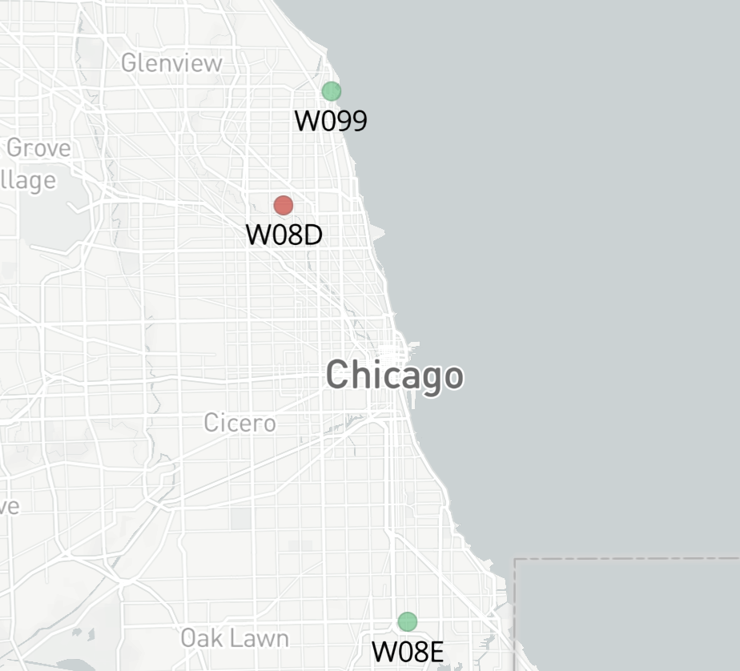
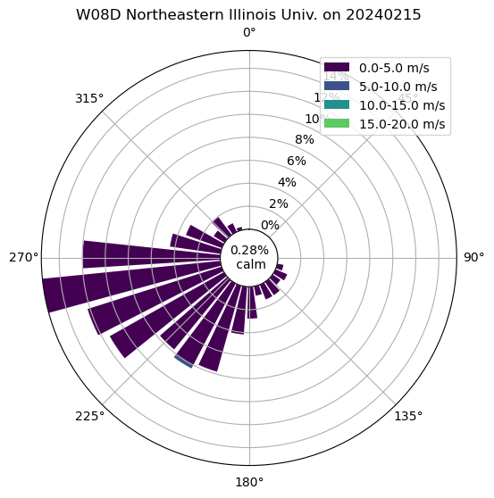
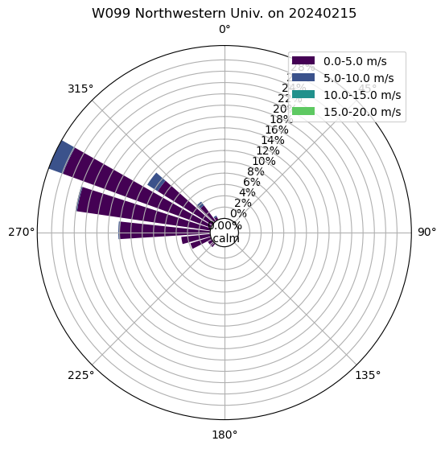

Current Weather Quicklooks#
Site Overview#
The sites:
W099 - Northwestern University (NU)
W08D - Northeastern Illinois University (NEIU)
W08E - Chicago State University (CSU)

import sage_data_client
start = "-1h"
Show code cell source
wxt_df = sage_data_client.query(
start=start,
filter={
"sensor": "vaisala-wxt536",
"name": "wxt.wind.*",
"vsn": "W08D|W099"
}
)
Code to Create Plots#
Show code cell source
import sage_data_client
from bokeh.models.formatters import DatetimeTickFormatter
import hvplot.pandas
import hvplot.xarray
import holoviews as hv
import cartopy.crs as ccrs
import cartopy.feature as cfeature
import xarray as xr
import matplotlib.pyplot as plt
from metpy.plots import USCOUNTIES
import metpy.calc as mpcalc
import act
import numpy as np
import pandas as pd
import warnings
from bokeh.models import DatetimeTickFormatter
import panel as pn
start = "-6h"
def apply_formatter(plot, element):
plot.handles['xaxis'].formatter = DatetimeTickFormatter(hours='%m/%d/%Y \n %H:%M',
minutes='%m/%d/%Y \n %H:%M',
hourmin='%m/%d/%Y \n %H:%M',
days='%m/%d/%Y \n %H:%M',
months='%m/%d/%Y \n %H:%M')
xr.set_options(keep_attrs=True)
warnings.filterwarnings("ignore")
hv.extension("bokeh")
# Dictionary for renaming to standard names
variable_rename_dict = {'wxt.env.humidity':'relative_humidity',
'wxt.env.pressure':'air_pressure',
'wxt.env.temp':'air_temperature',
'wxt.heater.temp':'heater_temperature',
'wxt.heater.volt':'heater_voltage',
'wxt.rain.accumulation':'rain_accumulation',
'wxt.wind.direction':'wind_direction',
'wxt.wind.speed':'wind_speed',
'sys.gps.lat':'latitude',
'sys.gps.lon':'longitude',
}
# Dictionary for units that are missing
units_dict = {'wxt.env.temp': 'degC',
'wxt.env.pressure':'hPa',
'wxt.env.humidity':'percent',
'wxt.wind.speed':'m/s',
'wxt.wind.direction':'degrees'}
def generate_data_array(df, variable, rename_variable_dict=variable_rename_dict):
new_variable_name = rename_variable_dict[variable]
df_variable= df.loc[df.name == variable]
ds = df_variable.to_xarray().rename({'value':new_variable_name,
'timestamp':'time',
'meta.vsn':'node'})
ds[new_variable_name].attrs['units'] = df_variable['meta.units'].values[0]
ds['time'] = pd.to_datetime(ds.time)
ds.attrs['datastream'] = ds.node.values[0]
return ds[[new_variable_name]]
def generate_dataset(df, variables, rename_variable_dict=variable_rename_dict):
try:
reindexed = df.set_index(['meta.vsn', 'timestamp'])
except:
reindexed = df.set_index(['timestamp'])
return xr.merge([generate_data_array(reindexed, variable) for variable in variables])
crocus_nodes = "W08D|W099"
# Query and load for n numbder of days
wxt_df = sage_data_client.query(
start=start,
filter={
"sensor": "vaisala-wxt536",
"name": "wxt.env.*",
"vsn": crocus_nodes
}
)
wxt_df1 = sage_data_client.query(
start=start,
filter={
"sensor": "vaisala-wxt536",
"name": "wxt.wind.*",
"vsn": crocus_nodes
}
)
wxt_df = pd.concat([wxt_df, wxt_df1])
try:
wxt_variables = wxt_df.name.unique()
wxt_df['meta.units'] = wxt_df.name.map(units_dict)
wxt_ds = generate_dataset(wxt_df, wxt_variables).squeeze().metpy.parse_cf()
wxt_ds['air_dewpoint_temperature'] = mpcalc.dewpoint_from_relative_humidity(wxt_ds.air_temperature, wxt_ds.relative_humidity)
# Resample to 1 minute freqency
minute_ds = wxt_ds.resample(time='1T').mean()
plots = []
for node in minute_ds.node.values:
minute_ds_subset = minute_ds.sel(node=node)
wxt_ds_subset = wxt_ds.sel(node=node)
temp_plot = minute_ds_subset.air_temperature.hvplot(color='red',
label='Air Temperature (degC)')
dewp_plot = minute_ds_subset.air_dewpoint_temperature.hvplot(color ='green',
label='Dewpoint Temperature (degC)')
plots.append((temp_plot * dewp_plot).opts(hooks=[apply_formatter]))
meteogram_variables = ['wind_speed', 'wind_direction']
for variable in meteogram_variables:
plots.append((wxt_ds_subset[variable].hvplot.line(label='10 Hz Data') *
minute_ds[variable].hvplot.line(label='1 Minute Data')).opts(hooks=[apply_formatter]))
except:
minute_ds = None
plots = pn.Row('No Data Available')
Show code cell source
hv.Layout(plots).cols(1)
---------------------------------------------------------------------------
ValueError Traceback (most recent call last)
Cell In[4], line 1
----> 1 hv.Layout(plots).cols(1)
File ~/miniconda3/envs/instrument-cookbooks-dev/lib/python3.10/site-packages/holoviews/core/layout.py:442, in Layout.__init__(self, items, identifier, parent, **kwargs)
440 def __init__(self, items=None, identifier=None, parent=None, **kwargs):
441 self.__dict__['_max_cols'] = 4
--> 442 super().__init__(items, identifier, parent, **kwargs)
File ~/miniconda3/envs/instrument-cookbooks-dev/lib/python3.10/site-packages/holoviews/core/dimension.py:1313, in ViewableTree.__init__(self, items, identifier, parent, **kwargs)
1310 items = self._process_items(items)
1311 params = {p: kwargs.pop(p) for p in list(self.param)+['id', 'plot_id'] if p in kwargs}
-> 1313 AttrTree.__init__(self, items, identifier, parent, **kwargs)
1314 Dimensioned.__init__(self, self.data, **params)
File ~/miniconda3/envs/instrument-cookbooks-dev/lib/python3.10/site-packages/holoviews/core/tree.py:66, in AttrTree.__init__(self, items, identifier, parent, dir_mode)
64 items = list(items) if items else items
65 items = [] if not items else items
---> 66 for path, item in items:
67 self.set_path(path, item)
ValueError: not enough values to unpack (expected 2, got 1)
Temperature (degC) (Past 24 Hours)#
Temperature in degrees Celsius for the past 24 hours!
Show code cell source
from IPython.display import IFrame
IFrame('https://portal.sagecontinuum.org/query-browser?apps=registry.sagecontinuum.org%2Fjrobrien%2Fwaggle-wxt536%3A0.23.5.08&nodes=W099%7CW08D&names=wxt.env.temp&start=-1d', width=800, height=400)
Wind Speed (m/s) (Past 24 Hours)#
Wind speed in meters per second for the past 24 hours!
Show code cell source
from IPython.display import IFrame
IFrame('https://portal.sagecontinuum.org/query-browser?apps=registry.sagecontinuum.org%2Fjrobrien%2Fwaggle-wxt536%3A0.23.5.08&nodes=W099%7CW08D&start=-1d&names=wxt.wind.speed', width=800, height=400)
Wind Direction (degrees) (Past 24 Hours)#
Wind direction in degrees for the past 24 hours!
Show code cell source
from IPython.display import IFrame
IFrame('https://portal.sagecontinuum.org/query-browser?apps=registry.sagecontinuum.org%2Fjrobrien%2Fwaggle-wxt536%3A0.23.5.08&nodes=W099%7CW08D&start=-1d&names=wxt.wind.direction', width=800, height=400)
Wind Rose Plot#
This plot shows the freqency and direction of the winds, separated by the magnitude of the winds. This helps with identifying where the wind was coming from and how strong that wind was.
Show code cell source
if minute_ds is not None:
for node in minute_ds.node.values:
minute_ds_subset = minute_ds.sel(node=node)
if node == "W08D":
minute_ds_subset.attrs["datastream"] = "W08D Northeastern Illinois Univ."
elif node == "W099":
minute_ds_subset.attrs["datastream"] = "W099 Northwestern Univ."
WindDisplay = act.plotting.WindRoseDisplay(minute_ds_subset, figsize=(6, 8), subplot_shape=(1,))
WindDisplay.plot(
'wind_direction', 'wind_speed', spd_bins=np.linspace(0, 20, 5), num_dirs=30, tick_interval=2, subplot_index=(0,)
)
plt.show()
else:
print('Issue with wxt datastream')

